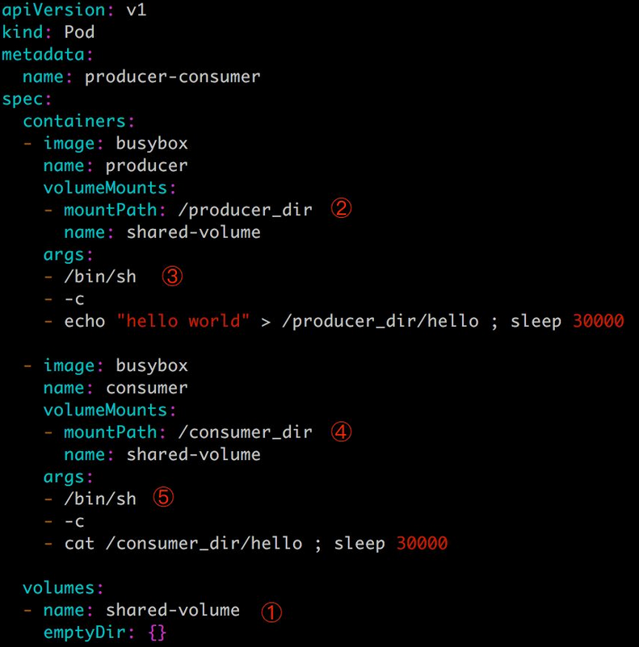

第7篇管理存储资源
一、Kubernetes 如何管理存储资源：
理解volume
首先我们学习 Volume，以及 Kubernetes 如何通过 Volume 为集群中的容器提供存储；然后我们会实践几种常用的 Volume 类型并理解它们各自的应用场景；最后，我们会讨论 Kubernetes 如何通过 Persistent Volume 和 Persistent Volume Claim 分离集群管理员与集群用户的职责，并实践 Volume 的静态供给和动态供给。
Volume
本节我们讨论 Kubernetes 的存储模型 Volume，学习如何将各种持久化存储映射到容器。
我们经常会说：容器和 Pod 是短暂的。
其含义是它们的生命周期可能很短，会被频繁地销毁和创建。容器销毁时，保存在容器内部文件系统中的数据都会被清除。
为了持久化保存容器的数据，可以使用 Kubernetes Volume。
Volume 的生命周期独立于容器，Pod 中的容器可能被销毁和重建，但 Volume 会被保留。
本质上，Kubernetes Volume 是一个目录，这一点与 Docker Volume 类似。当 Volume 被 mount 到 Pod，Pod 中的所有容器都可以访问这个 Volume。Kubernetes Volume 也支持多种 backend 类型，包括 emptyDir、hostPath、GCE Persistent Disk、AWS Elastic Block Store、NFS、Ceph 等，完整列表可参考
https://kubernetes.io/docs/concepts/storage/volumes/#types-of-volumes
Volume 提供了对各种 backend 的抽象，容器在使用 Volume 读写数据的时候不需要关心数据到底是存放在本地节点的文件系统中呢还是云硬盘上。对它来说，所有类型的 Volume 都只是一个目录。
二、kubernetes Volume种类：
emptyDir
emptyDir 是最基础的 Volume 类型。正如其名字所示，一个 emptyDir Volume 是 Host 上的一个空目录。
emptyDir Volume 对于容器来说是持久的，对于 Pod 则不是。当 Pod 从节点删除时，Volume 的内容也会被删除。但如果只是容器被销毁而 Pod 还在，则 Volume 不受影响。
也就是说：emptyDir Volume 的生命周期与 Pod 一致。 Pod 中的所有容器都可以共享 Volume，它们可以指定各自的 mount 路径。下面通过例子来实践 emptyDir，配置文件如下：

这里我们模拟了一个 producer-consumer 场景。Pod 有两个容器 producer和 consumer，它们共享一个 Volume。producer 负责往 Volume 中写数据，consumer 则是从 Volume 读取数据。
① 文件最底部 volumes 定义了一个 emptyDir 类型的 Volume shared-volume。
② producer 容器将 shared-volume mount 到 /producer_dir 目录。
③ producer 通过 echo 将数据写到文件 hello 里。
④ consumer 容器将 shared-volume mount 到 /consumer_dir 目录。
⑤ consumer 通过 cat 从文件 hello 读数据。
emptyDir 是 Host 上创建的临时目录，其优点是能够方便地为 Pod 中的容器提供共享存储，不需要额外的配置。但它不具备持久性，如果 Pod 不存在了，emptyDir 也就没有了。根据这个特性，emptyDir 特别适合 Pod 中的容器需要临时共享存储空间的场景，比如前面的生产者消费者用例。
hostPath Volume
hostPath Volume 的作用是将 Docker Host 文件系统中已经存在的目录 mount 给 Pod 的容器。大部分应用都不会使用 hostPath Volume，因为这实际上增加了 Pod 与节点的耦合，限制了 Pod 的使用。不过那些需要访问 Kubernetes 或 Docker 内部数据（配置文件和二进制库）的应用则需要使用 hostPath。
看下面是 Volume 的相关部分：

这里定义了三个 hostPath volume k8s、certs 和 pki，分别对应 Host 目录 /etc/kubernetes、/etc/ssl/certs 和 /etc/pki。
如果 Pod 被销毁了，hostPath 对应的目录也还会被保留，从这点看，hostPath 的持久性比 emptyDir 强。不过一旦 Host 崩溃，hostPath 也就没法访问了。
外部 Storage Provider
如果 Kubernetes 部署在诸如 AWS、GCE、Azure 等公有云上，可以直接使用云硬盘作为 Volume，下面是 AWS Elastic Block Store 的例子：

要在 Pod 中使用 ESB volume，必须先在 AWS 中创建，然后通过 volume-id 引用。其他云硬盘的使用方法可参考各公有云厂商的官方文档。
Kubernetes Volume 也可以使用主流的分布式存，比如 Ceph、GlusterFS 等，下面是 Ceph 的例子：

Ceph 文件系统的 /some/path/in/side/cephfs 目录被 mount 到容器路径 /test-ceph。
相对于 emptyDir 和 hostPath，这些 Volume 类型的最大特点就是不依赖 Kubernetes。Volume 的底层基础设施由独立的存储系统管理，与 Kubernetes 集群是分离的。数据被持久化后，即使整个 Kubernetes 崩溃也不会受损。
当然，运维这样的存储系统通常不是项简单的工作，特别是对可靠性、高可用和扩展性有较高要求时。
Volume 提供了非常好的数据持久化方案，不过在可管理性上还有不足。
PV & PVC
Volume 提供了非常好的数据持久化方案，不过在可管理性上还有不足。
拿前面 AWS EBS 的例子来说，要使用 Volume，Pod 必须事先知道如下信息：
- 当前 Volume 来自 AWS EBS。
- EBS Volume 已经提前创建，并且知道确切的 volume-id。
Pod 通常是由应用的开发人员维护，而 Volume 则通常是由存储系统的管理员维护。开发人员要获得上面的信息：
- 要么询问管理员。
- 要么自己就是管理员。
这样就带来一个管理上的问题：应用开发人员和系统管理员的职责耦合在一起了。如果系统规模较小或者对于开发环境这样的情况还可以接受。但当集群规模变大，特别是对于生成环境，考虑到效率和安全性，这就成了必须要解决的问题。
Kubernetes 给出的解决方案是 PersistentVolume 和 PersistentVolumeClaim。
PersistentVolume (PV) 是外部存储系统中的一块存储空间，由管理员创建和维护。与 Volume 一样，PV 具有持久性，生命周期独立于 Pod。
PersistentVolumeClaim (PVC) 是对 PV 的申请 (Claim)。PVC 通常由普通用户创建和维护。需要为 Pod 分配存储资源时，用户可以创建一个 PVC，指明存储资源的容量大小和访问模式（比如只读）等信息，Kubernetes 会查找并提供满足条件的 PV。
有了 PersistentVolumeClaim，用户只需要告诉 Kubernetes 需要什么样的存储资源，而不必关心真正的空间从哪里分配，如何访问等底层细节信息。这些 Storage Provider 的底层信息交给管理员来处理，只有管理员才应该关心创建 PersistentVolume 的细节信息。
Kubernetes 支持多种类型的 PersistentVolume，比如 AWS EBS、Ceph、NFS 等，完整列表请参考：